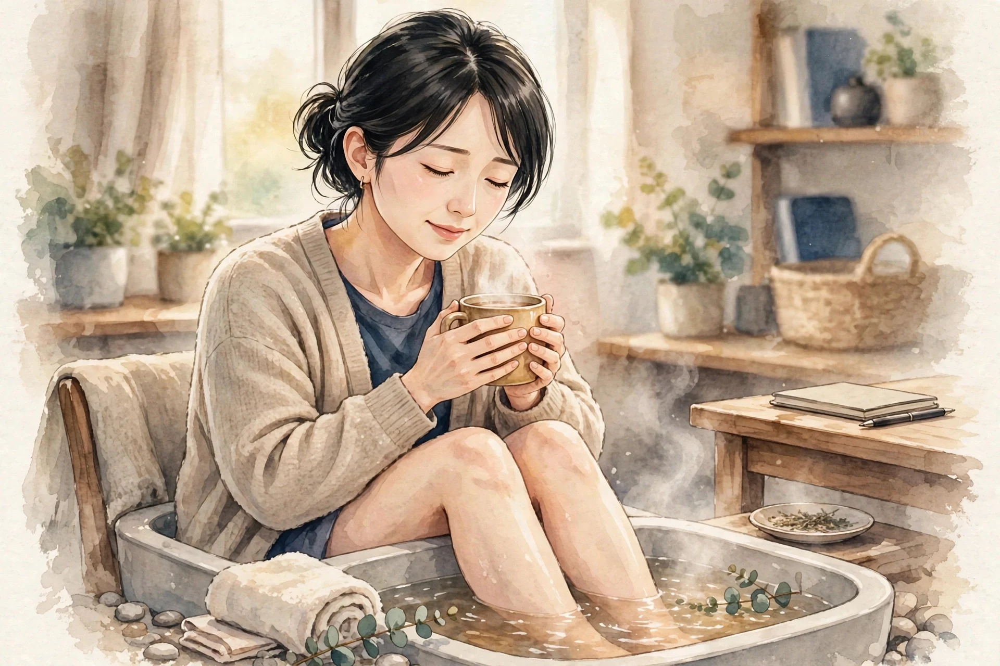

すすきので雪の続く日に気になる更年期のゆらぎ｜寒暖差と向き合う過ごし方とセルフケア、受診の目安｜美容整体ステラ・デネブ

札幌の冬は、雪が降り続く日が何日も続き、朝起きると窓の外が一面の雪景色になっていることがあります。雪かきや雪道の歩行で体を使ったあと、暖房の効いた室内に入ると、体がほてったり、逆に手足の冷えが残ったりして、体の調子がその日によって変わりやすく感じられることがあります。更年期のゆらぎを感じる年代の方の中には、こうした寒暖差の大きい日が続く時期に、眠りの浅さやほてり感、体のだるさが気になる方もいます。このコラムでは、更年期のゆらぎの一般的なとらえ方、雪の続く日に重なりやすい要因の整理、寒暖差と向き合う過ごし方とセルフケア、受診を考える目安についてお伝えします。
更年期のゆらぎとは、どんな状態か
更年期のゆらぎとは、40代後半から50代にかけて、女性ホルモンの分泌の変化にともなって、体の調子や気持ちのあり方が揺れ動きやすく感じられる時期を指すことがあります。ほてりや発汗、眠りの浅さ、疲れやすさ、気分の浮き沈み、手足の冷えや肩のこわばりなど、感じられる変化は人によってさまざまで、同じ方でも日によって変わることがあります。すべての方に同じ変化が現れるわけではなく、感じ方には大きな個人差があります。
更年期のゆらぎは、体の変化そのものだけでなく、気温の変化や睡眠のとれ方、生活の忙しさといった要素と重なって感じられることがあります。雪の続く時期は、屋外と室内の温度差が大きく、体の変化に気づきにくくなったり、逆にいつもより気になったりすることもあります。まずは「ゆらぎやすい時期」としてとらえ、無理をせず、自分のペースで過ごすことが大切です。
雪の続く日に重なりやすい要因の整理
雪の続く日に更年期のゆらぎが気になりやすい要因のひとつは、屋外と室内の寒暖差の大きさです。冷たい雪道を歩いたあと、暖房の効いた室内に入ると、体が急に温まってほてりを感じたり、逆に手足の冷えがなかなか取れなかったりすることがあります。こうした温度の行き来が何度も繰り返されると、体の調子がその日によって変わりやすく感じられることがあります。
雪の日の暮らし方も関係することがあります。雪かきや雪道の歩行で体を使う日が続くと、肩や腰のこわばりを感じやすくなります。雪道では足元に注意しながら歩くため、体に力が入ったままになりやすく、帰宅したあとにどっと疲れを感じることもあります。すすきのの街では、地下歩行空間を使う日と、地上の雪道を歩く日で、体の冷え方や疲れ方が変わることもあります。
冬の札幌は日照時間が短く、夜が長い時期でもあります。日光を浴びる時間が短くなると、眠りのリズムが乱れやすくなると言われています。雪の続く日は外出を控えがちになり、体を動かす時間が少なくなることも、眠りの浅さと一緒に感じられることがあります。更年期のゆらぎを感じる時期は、もともと眠りが浅くなりやすいと言われており、そこに冬の暮らしの変化が重なると、夜中に目が覚めやすくなることもあります。
寒暖差と向き合う、雪の日の過ごし方とセルフケア
寒暖差と向き合う工夫のひとつは、屋外と室内での服装の調整です。外出時は首元や手首、足首を冷やさないように、マフラーや手袋、厚手の靴下で冷たい空気から体を守ってみてください。室内に入ったら、重ね着を一枚脱いで、体がほてりすぎないように調整すると、温度の変化に体がついていきやすくなります。温かい飲み物をゆっくり飲む時間をつくるのも、体を内側から温める工夫のひとつです。
帰宅したら、まず湯船につかって体を温める時間をつくってみてください。肩まで温まりながら、ゆっくりと深呼吸をすると、雪道で緊張した体の力がゆるみやすくなります。湯船で温まったあとは、体が冷える前に保湿を済ませ、暖かい部屋着に着替えるのがおすすめです。寝る前には、足湯で足元を温めたり、湯たんぽや温かい布団で足元を温かく保ったりすると、眠りに入りやすくなると考えられています。
食事と水分の工夫も、雪の続く時期には見直してみてください。冬は温かいものを求めて、汁物や鍋物が増える一方で、野菜や果物が不足しがちになることもあります。根菜やきのこを使った汁物や鍋物は、体を温めながら野菜もとりやすい献立です。水分は、喉が渇く前にこまめにとることが大切です。温かいお茶や白湯をゆっくり飲む時間をつくると、体が内側から温まりやすくなります。
日中の過ごし方では、体を動かす時間を意識的に取り入れてみてください。雪かきのあとは、肩や腰をゆっくり回したり、立ち上がって伸びをしたりするだけでも、体のこわばりがゆるみやすくなります。眠りの浅さと一緒に寝つき・眠りの浅さや冷えが気になる日は、無理に頑張らず、昼の時間に窓の外の雪景色を眺めて目を休ませるひとときをつくるのも工夫のひとつです。
受診を考える目安
更年期のゆらぎによる変化は、日常の工夫で付き合っていけることも多いものですが、受診を考えたほうがよい場合もあります。夜中に何度も目が覚める日が2週間以上続き、日中の眠気が強くて仕事や生活に支障が出ているときや、ほてりや汗が強く、雪の日の外出そのものがつらいと感じるときは、婦人科やかかりつけ医に相談してみてください。気分の落ち込みが長く続く、動悸や息苦しさを感じる、急な体重の変化がある、といった場合も、早めに医療機関を受診してください。
更年期のゆらぎと似た感じ方をする変化の中には、甲状腺や血圧など、ほかの要因が関わっている場合もあると考えられています。寒さの厳しい時期は、体の変化を「冬のせい」と見過ごしがちになることもあります。気になる変化があれば、まずはかかりつけ医に相談してみてください。症状の感じ方は人それぞれで、同じような感じ方でも背景が異なることがあります。
それでも雪の続く日の疲れや、眠りの浅さが気になる日は、プロの手に委ねる時間も選択肢の一つです。美容整体ステラ・デネブは、札幌・すすきの／大通エリアで開院準備中の女性専用サロンです。オイルマッサージと美容整体で、雪の続く日の体の重さや眠りの浅さを丁寧にほぐすお手伝いができるよう、準備を進めています。料金は90分10,000円の単一価格（初回割引なし）、営業時間は月〜土17:00〜22:00・日曜休み（予定）です。近日開院予定（受付は開始次第、このサイトとLINE公式でお知らせします）。お問い合わせ用LINE公式アカウントを開設しました。開院まで、このコラムで季節のセルフケアをお届けしていきます。
季節の変わり目の冷えと乾燥の過ごし方は、コラム「初雪の便りが届く頃に ── 札幌の冬支度と、冷え・こわばりのセルフケア」でも紹介しています。